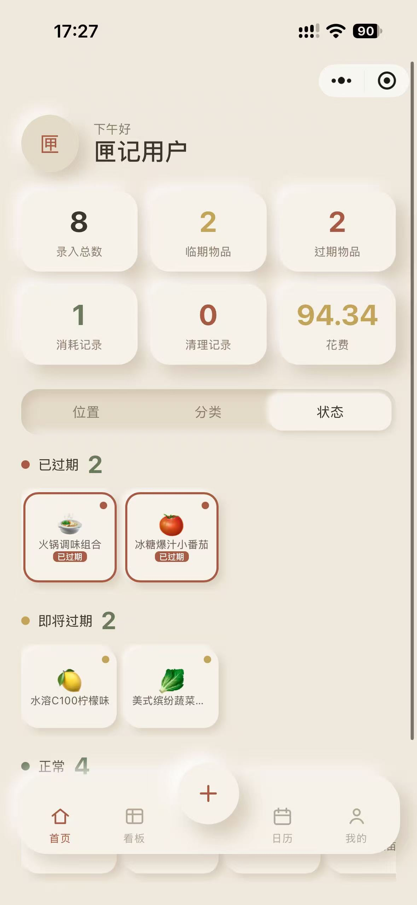
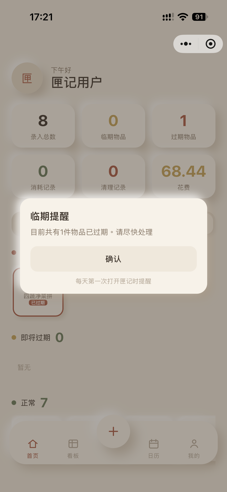
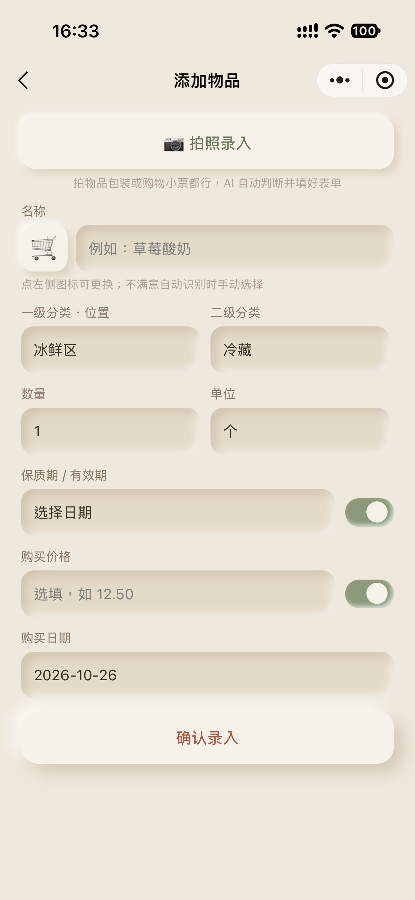
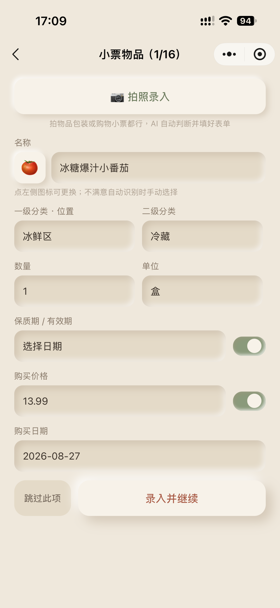
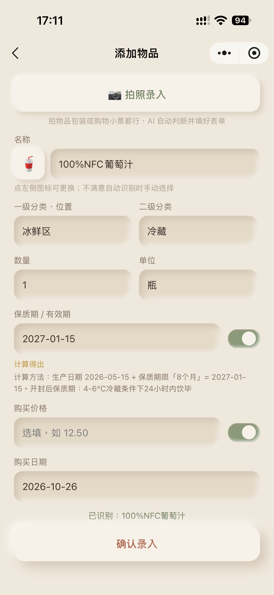
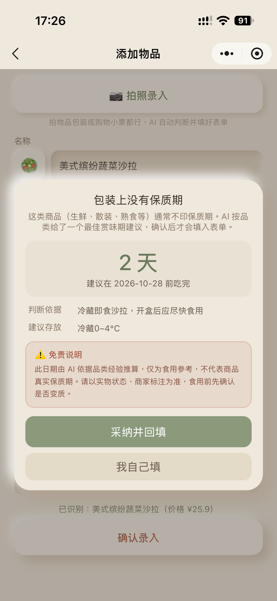
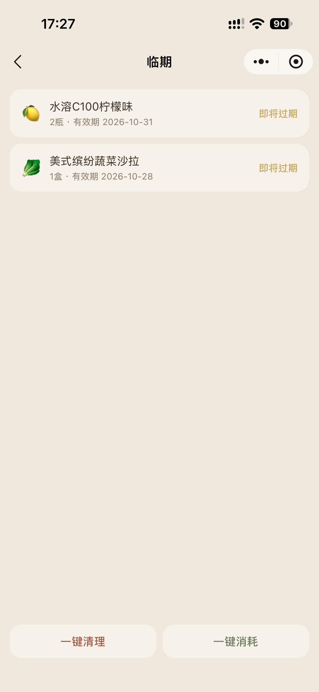
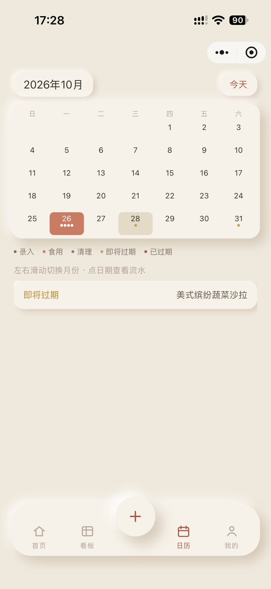

看清日期来源
分清包装标注、日期计算与 AI 估计。每个日期都保留来源说明，方便回看和修改。
01 / AI PRODUCT PRACTICE
微信小程序
从状态总览到打开时的提醒，把到期信息放在随手可见的位置。


买回家的物品分散在不同位置，保质期留在包装上，时间一久就容易忘。把物品和日期记下来，临期及时提醒；少翻找、少操作，也少一点过期浪费和重复购买。
减少手填，把时间留给真正需要处理的物品。
对准包装拍照，或上传购物小票与订单截图。自动识别商品信息，小票中的多件物品逐一确认。


检查识别结果。读取包装标注的到期日；只有生产日期与保质期限时再计算。读不到就手填，AI 赏味期建议由用户决定是否采用。


打开临期列表或到期日历，找到该先使用的物品。食用或清理后，直接记录处理结果。


分清包装标注、日期计算与 AI 估计。每个日期都保留来源说明，方便回看和修改。
包装没有明确日期时，AI 可以建议赏味期；采纳、修改或跳过，都由用户决定。
通过系统日历和打开小程序时的提示查看临期物品；iOS 与 Android 的提醒能力按平台实际情况处理。
微信小程序由 uni-app 构建，物品数据由腾讯云云开发承接。拍照后，云函数调用百炼视觉模型识别包装与小票；结果回填表单，供用户检查和修改。识别原图在调用结束后删除。